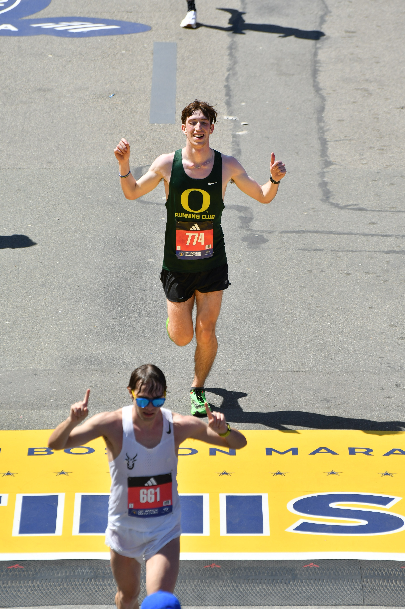

This page is intended to show photos from adventures with Sarah, and just my adventures in General. I also may include documentation of my running adventures, goals and training. I am currently training to run under 2:30 in the full marathon distance.
Mount Shasta

Above is a photo of me and Sarah on top of Mount Shasta's summit. We did a one day climb starting from the Bunny Flats TH, and following the standard Avalanche Gulch route. The lower portion of the route was relatively simple, and not very steep. However, immediately after base camp at 10000' there is a 2000' climb up to the red banks. This was the most difficult and steepest part of the climb, with the relentless slope, and icyness making it an excruciatingly long ascent. Once we reached the upper mountain, we found misery hill to be quite easy, and the summit block to be very similar to hood in the interesting rime ice formations, and the large smoking fumarole spewing sulfur fumes. This was my 20th birthday celebration, and there is no one else I would rather have spent it with, and no one else I would have rather taken on this large challenge with. Cannot wait for the next climb - Vesper Peak?? We shall See....
128th Boston Marathon
This April I ran the Boston Marathon, it was a hot and difficult day. I struggled from mile 1, but ended up finishing in 2:44 which was 12 minutes slower than my goal. Next up will be the Portland Marathon, Where I hope to run a big PR and potentially get the win. Boston was incredibly fun, and something I am very grateful to have gotten the opportunity in spite of a dissapointing performance athletically. I average around 60-65 mpw with a peak at 75 miles at altitude in Sunriver, Oregon. I felt that I was in shape for a 2:32 marathon, but simply was unprepared for the 70 degree temps. The scream tunnel was the obvious highlight of the race, my watch was giving me noise warnings the whole way through Wellesley!! Will I run it back next year to meet up with the British Henry Axon, and meet up with Keaton and Jack??
Mount Saint Helens #3

In mid april, Sarah and I decided now was the time to take on Saint Helens. Saint Helens is easily my favorite climb in the cascades thus far, and while today was not exactly the best day for the view, it was otherwise fantastic starting with a 1:30 alpine start fueled by chameleon cold brew, and almond butter. The first half of the climb mileage wise was all in the trees , however once we emerged the climb quickly steepened and gained a rocky ridge which wound up causing us some fairly serious difficulties. Once we reached the top of the seismic monitor we spent a half hour deciding whether or not to continue given that we were freezing and scared. Ultimately we did, and the sunrise saved us. A few hours later we reached the top, only to realize the cornice was blocking the view entirely. After our descent, a dinner at the Hawthorne asylum, and coffee at Nosa Familia hit the spot before a painfully long drive down to the EUG. Another great adventure with my favorite adventure partner!